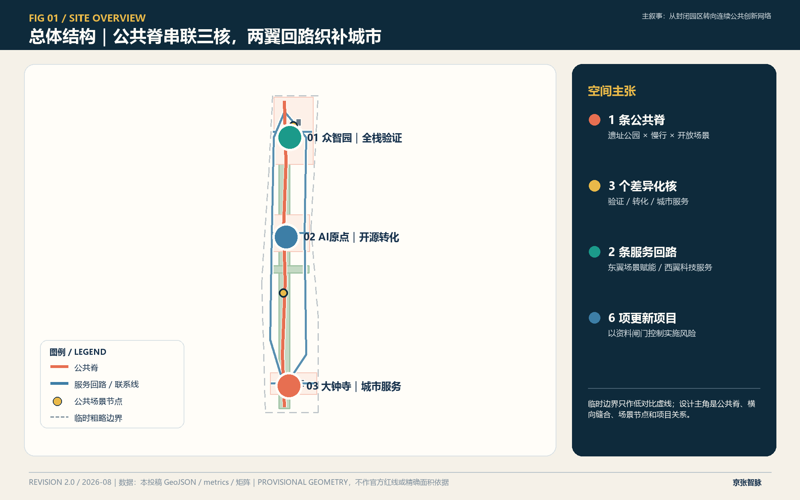
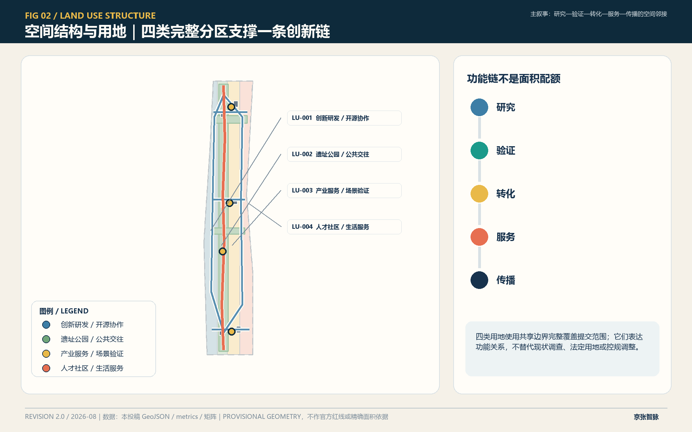
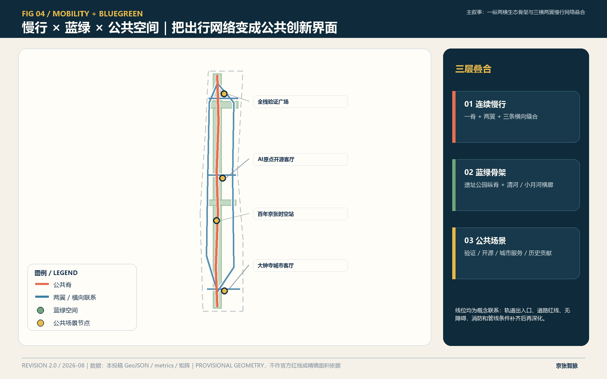
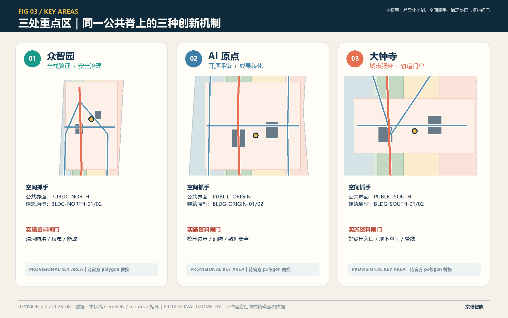
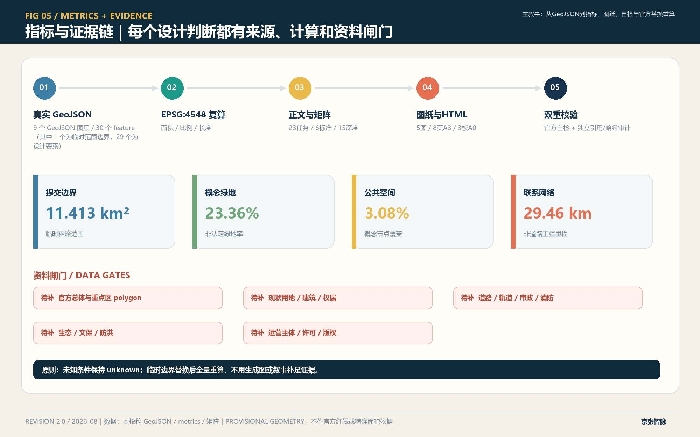

众智园
全栈测试共享平台、安全治理工坊、分级准入与失败回滚。
一条公共脊串联三处差异化创新核，以两翼服务回路、六项更新项目和十二个可审计场景，把 AI 创新从园区口号转化为空间契约与治理流程。
评审索引：总览地图 · 三层范围 · 重点区域 · 用地分区 · 交通慢行 · 蓝绿公共空间 · 建筑与更新项目 · AI 场景 · 核心指标 · 任务覆盖 · 自检状态 · 来源 · 假设




全栈测试共享平台、安全治理工坊、分级准入与失败回滚。
开源评审、成果发布、知识产权与场景转化门诊。
轨道门户、社区人工服务、低门槛路演与国际交往。
公共脊
众智园
众智园
清河横廊
AI原点
AI原点
小月河横廊
AI原点
大钟寺
大钟寺
大钟寺
时空站
| 项目 | 真实空间对象 | 阶段 | 关键前置条件 |
|---|---|---|---|
| JZ-01 公共脊断点缝合 | ROAD-SPINE | PHASE-01 | 道路、桥下、交通、消防 |
| JZ-02 众智园验证界面 | PUBLIC-NORTH / BLDG-NORTH-* | PHASE-03 | 防洪、权属、能源、设备安全 |
| JZ-03 AI原点转化街 | PUBLIC-ORIGIN / BLDG-ORIGIN-* | PHASE-02 | 校园边界、消防、数据安全 |
| JZ-04 大钟寺连通 | ROAD-LINK-S / PUBLIC-SOUTH | PHASE-01 | 站点、地下空间、管线 |
| JZ-05 蓝绿网络 | GREEN-SPINE/NORTH/MID | PHASE-02 | 绿线、河道、防洪、生态 |
| JZ-06 贡献路线 | PUBLIC-HERITAGE | PHASE-03 | 版权、许可、安全、运营主体 |
